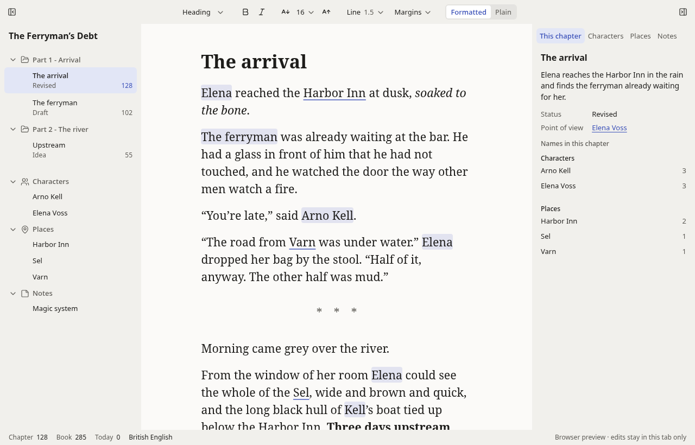
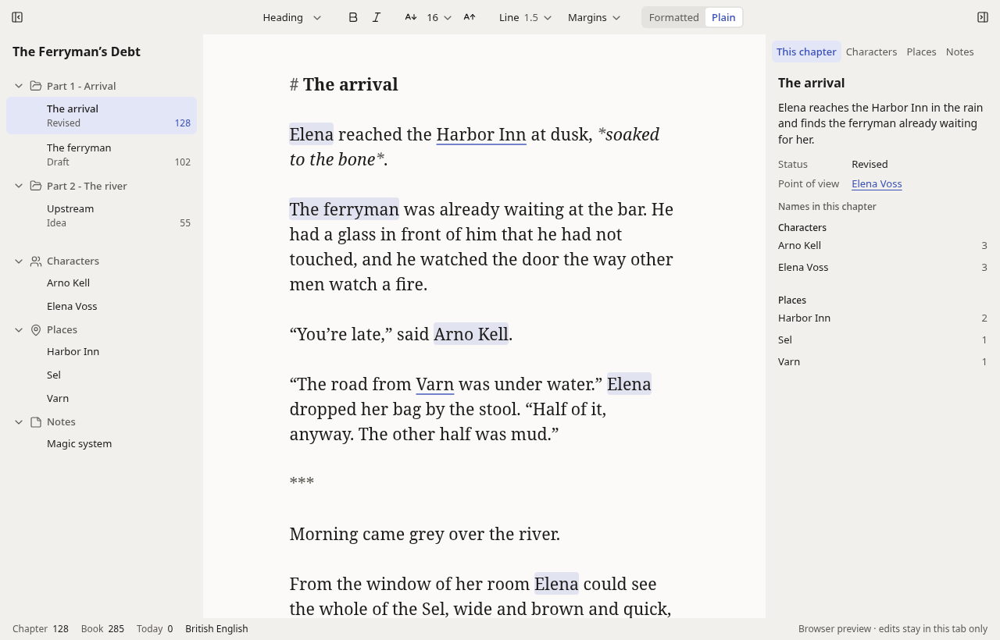
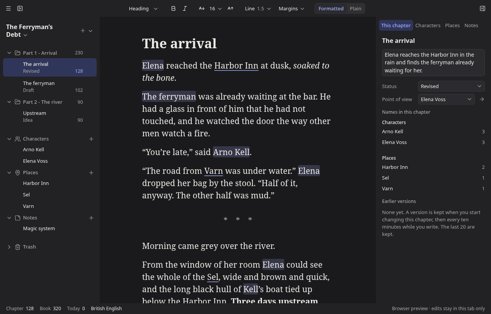
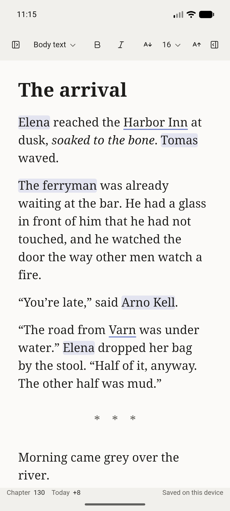
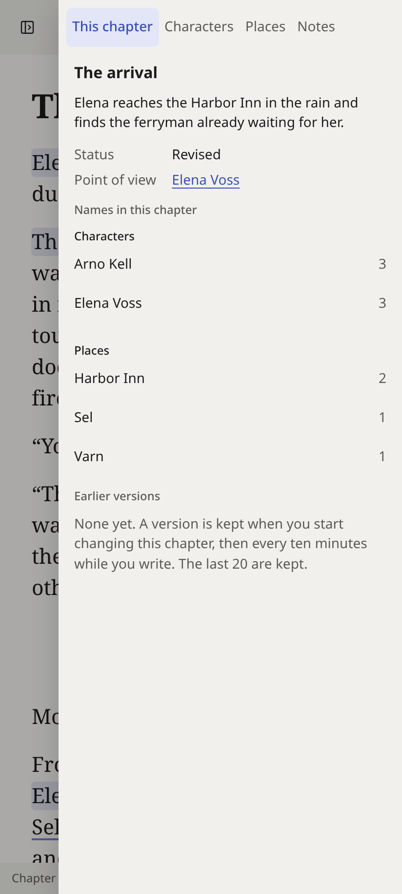

Write your novel in plain Markdown files
Writing Tool is a writing app for novels, in the spirit of Scrivener and novelWriter: a binder of parts and chapters, the chapter in the middle, and an inspector with your character and place sheets. Names are highlighted as you type, and every chapter is a Markdown file you can open in any editor.
For Windows, macOS, Linux and Android Install notes and other systems
Version 0.1.0 is an early release. Writing works; sync, spelling and export aren’t built yet.

What it does
Binder, chapter and inspector
Parts and chapters on the left, the text in the middle, and on the right this chapter’s synopsis, status and point of view next to your sheets. Hide or resize either side, or use focus mode.
Your book stays in plain files
A project is an ordinary folder with one Markdown file per chapter, so you can back it up, search it or keep it in Git. Switch between projects, or on desktop open a project folder from anywhere.
Names highlighted as you type
Character and place names and their aliases are marked in the text as you write: whole words only, with accents and apostrophes handled. Click a name to open its sheet. Make and edit sheets in the inspector: name, other names, fields and notes.
Formatted or Plain
Two editing modes over the same Markdown: Formatted shows styled text, Plain shows the Markdown with its markers dimmed. Switching keeps the caret in place and leaves the file exactly as it was.
Autosave and earlier versions
A chapter saves about a second after you stop typing. Its last 20 versions are kept, to restore from the inspector. Word counts show the chapter, the book and today.
Reorganise the binder
Rename, set a status, move or add chapters and parts from their menu, or drag them into order. Trashed chapters can be restored, and chapter files are renumbered to follow the binder.


On Android
The same app on your phone. The chapter fills the screen, the binder and the inspector slide in from the screen edges, and the formatting bar sits just above the keyboard while you type.


What isn’t built yet
Version 0.1.0 is the first phase of the development plan: the writing core. Still to come:
- Sync between devices through Dropbox, with conflict merging
- Spelling and grammar checks
- Export to PDF, EPUB, Word and Markdown
- A list of possible names found in your text
So far the desktop app has been tested mainly on Linux.
Download
Free, for Windows, macOS, Linux and Android. These links always get the newest build. The builds aren’t code-signed yet, so your system warns you the first time you open the app; the notes say what to choose.
Windows
- Setup file (.exe) Windows 10 and 11, 64-bit
Run the setup file. If SmartScreen says “Windows protected your PC”, choose “More info”, then “Run anyway”. It installs for your user account, without admin rights.
macOS
- Disk image (.dmg) Apple silicon and Intel
Open the disk image and drag Writing Tool to Applications. On first launch macOS says it can’t verify the app: open System Settings → Privacy & Security and choose “Open Anyway”.
Linux
- AppImage x86_64, most distributions
- .deb package Debian, Ubuntu
- .rpm package Fedora, openSUSE
AppImage: make it executable, then run it.
chmod +x Writing-Tool-linux-x86_64.AppImage.deb package:
sudo apt install ./Writing-Tool-linux-amd64.deb.rpm package:
sudo dnf install ./Writing-Tool-linux-x86_64.rpmIt needs WebKitGTK 4.1, which most current distributions have.
Android
- APK 64-bit ARM, nearly every phone from the last several years
Download the APK on your phone and open it. When asked, allow your browser to install apps. Later builds install over it and keep your projects.